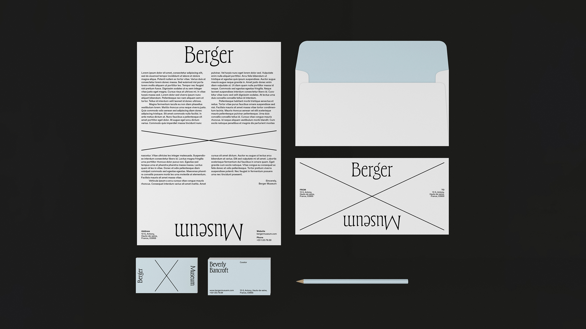
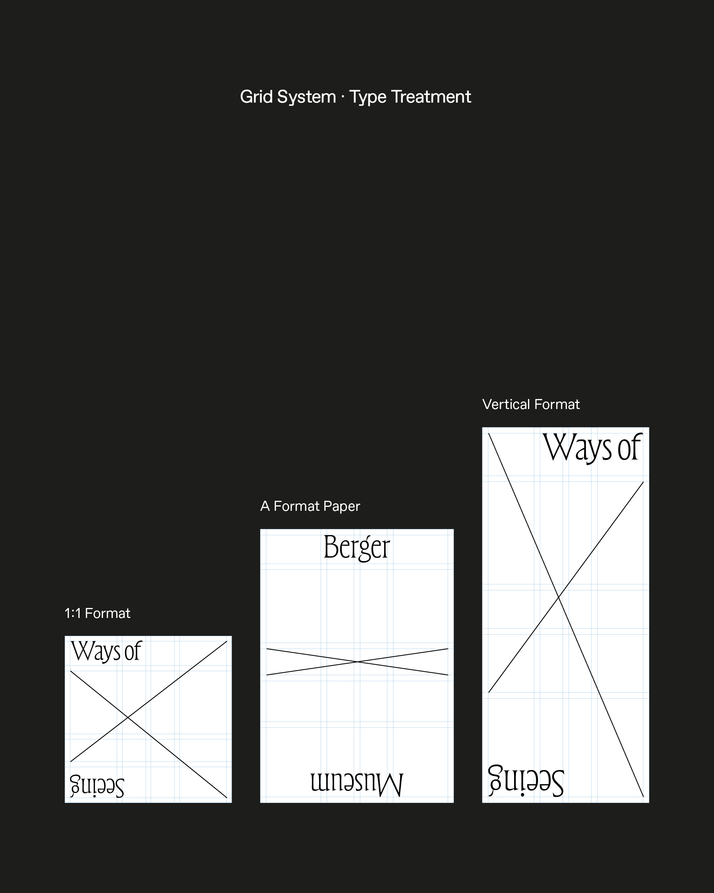
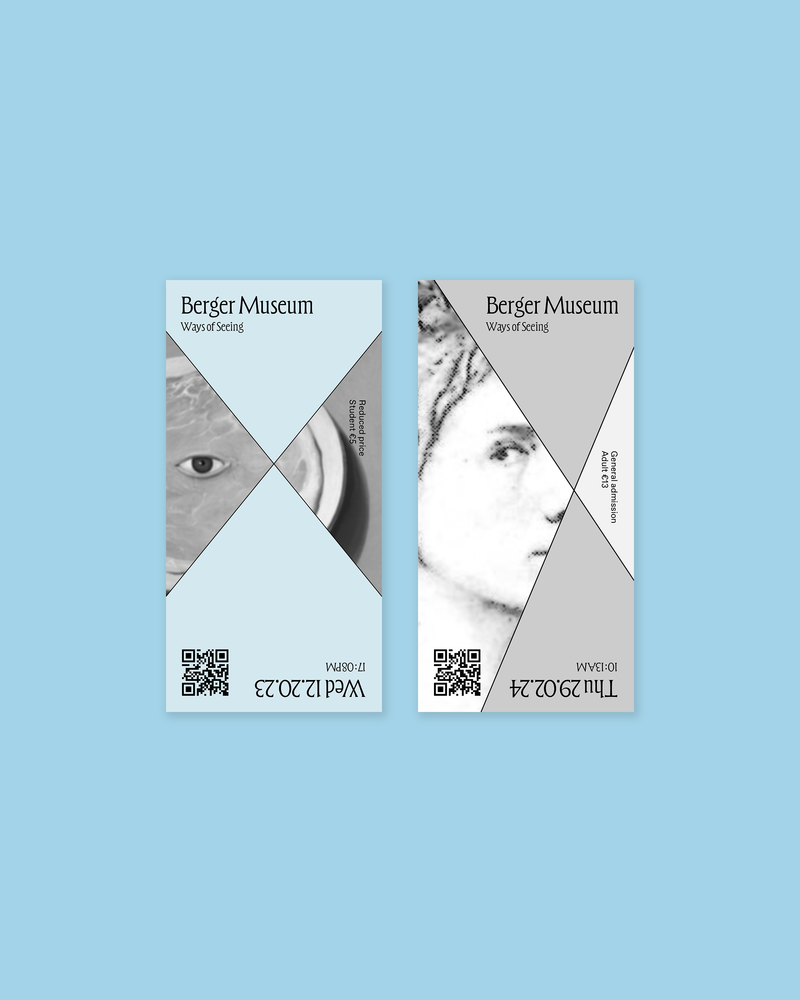
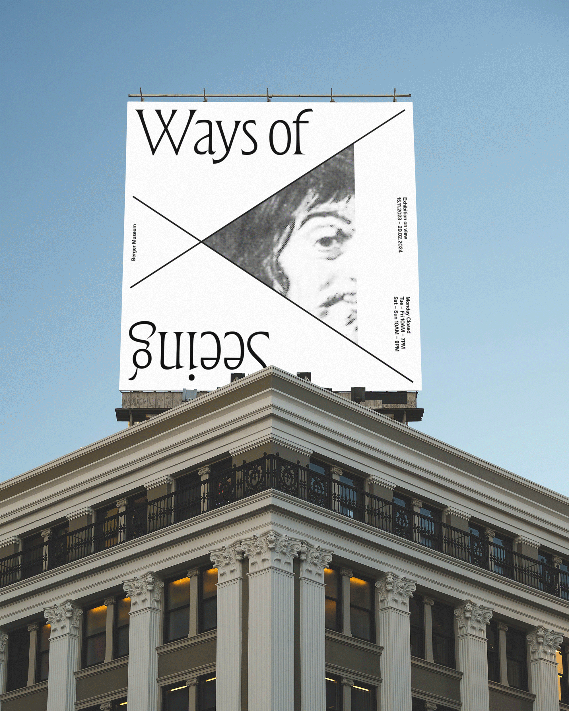
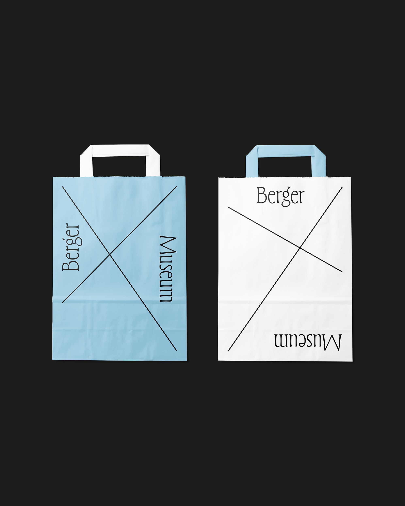
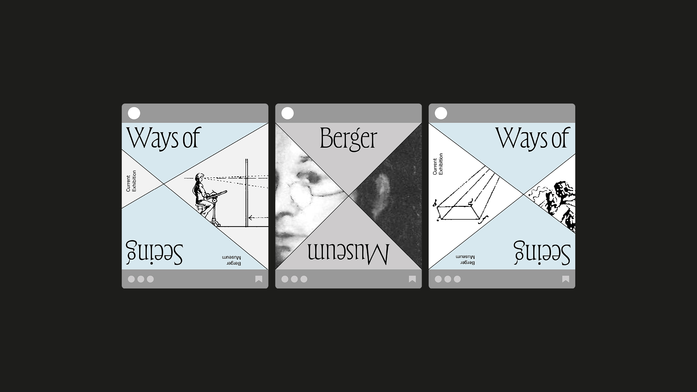
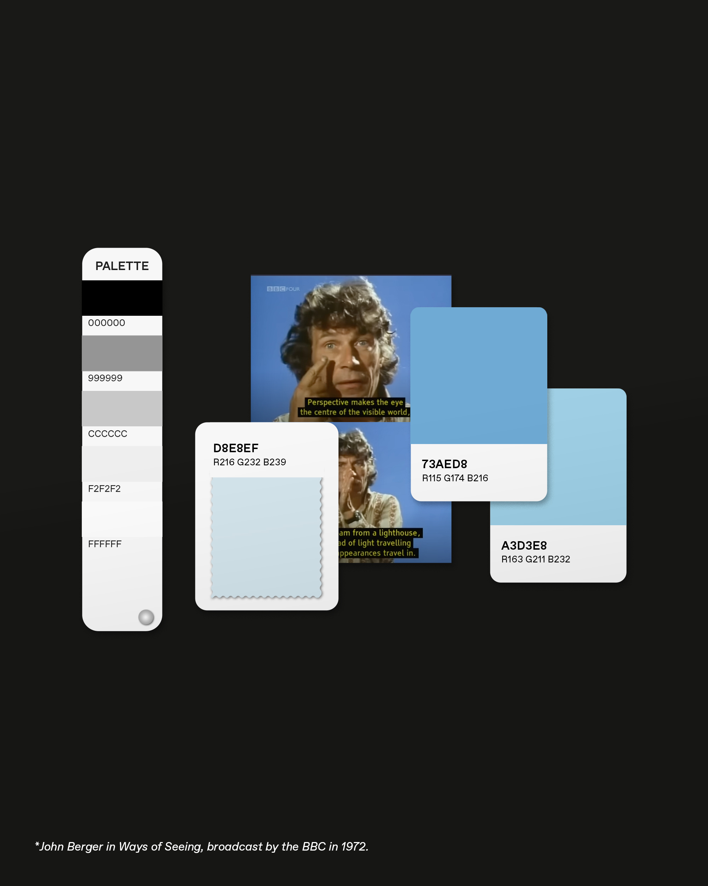
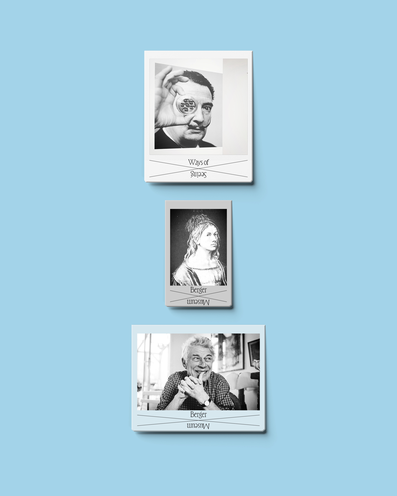
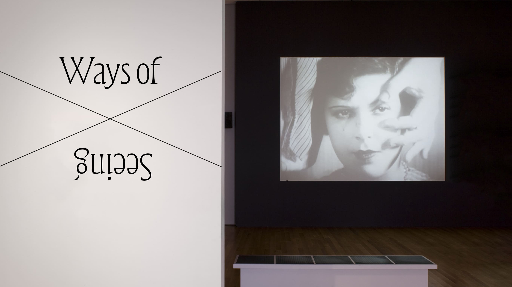

Berger Museum and its permanent exhibit “Ways of Seeing” is a theoretical museum exhibition in light of the British art critic, writer, and painter John Berger. The visual identity system was composed of two lines and an incised, classical typeface. It was a simple idea inspired by a diagram in Berger's book. The two lines symbolize the unique perspective that each person has, as Berger said “You are seeing them in the context of your own life.”
* Photos are used for educational purposes.










